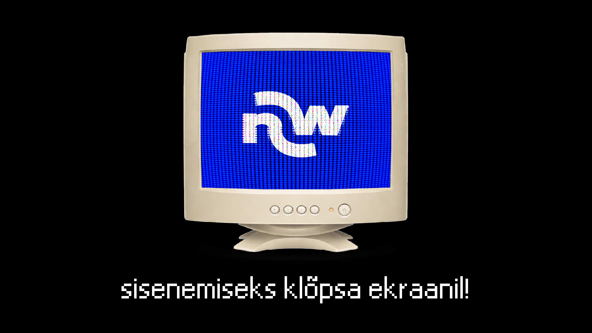
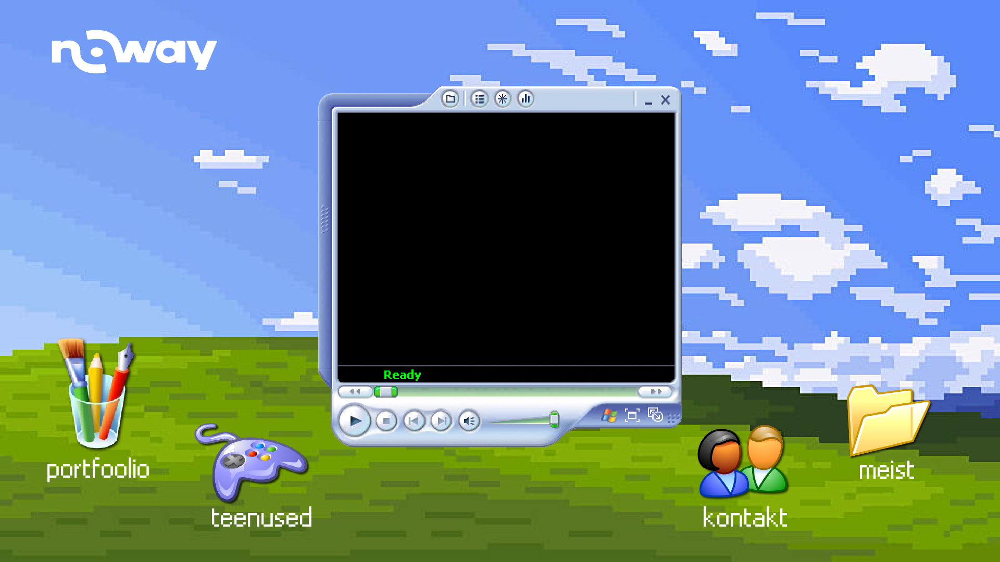
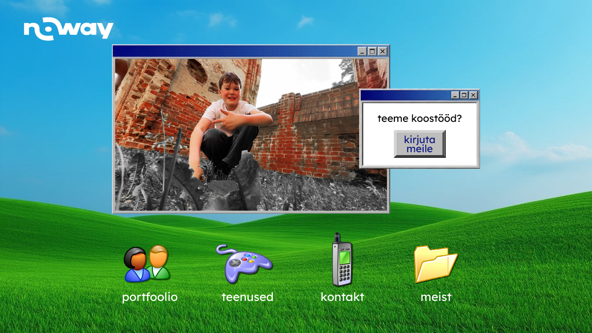

Teenused
Noway aitab sinu brändil paista silma. Disainime ja ehitame veebilehti, loome visuaalset identiteeti ning toodame videosisu — algusest lõpuni, ühe meeskonnaga.
Veebidisain
Kodulehed ja maandumislehed, mis näevad head välja igal ekraanil ja toovad kliente.
Bränding ja logo
Logo, värvid ja visuaalne keel, mis teevad sinu brändi äratuntavaks.
Video ja montaaž
Reklaamklipid, tootevideod ja montaaž sotsiaalmeedia jaoks.
Sotsiaalmeedia
Postituste kujundused ja visuaalid, mis hoiavad sinu kanalid ühtses stiilis.
E-pood
Lihtsalt hallatavad e-poed, kus ostmine on kiire ja mugav.
Hooldus ja tugi
Hoiame sinu lehe värske, kiire ja töökorras ka pärast avaldamist.
Portfoolio
Valik meie enda kujundatud vaateid — arvuti- ja mobiilivaated, algusest lõpuni meie disainitud.



Miks Noway?
Meiega suhtled otse tegijatega — ilma vahekihtideta. Iga projekt saab isikliku lähenemise: kuulame, pakume välja ja viime lõpuni. Ja nagu näed, ei karda me teha asju teistmoodi.